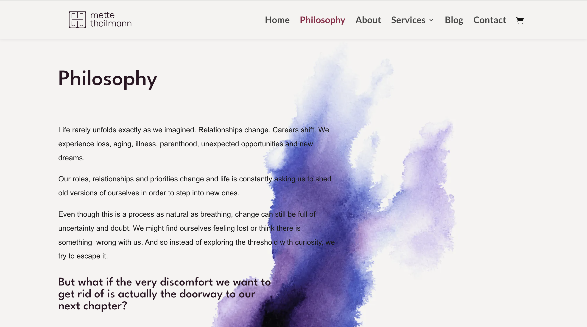

Brand Writing
I collaborate with freelancers, independent small businesses and organisations to turn a concept, idea or project into something more concrete, giving it the creative and precise words needed to connect with your desired audience.
I write:
- Website copy (taglines, UX, SEO)
- Digital content writing (newsletters, blogs, social media, video scripts, interview transcripts)
- Marketing texts (descriptions of your offerings)
Together we:
- Find the perfect words to describe who you are and what you do
- Making your services easier to understand for your clients or audience
- Develop new ideas and concepts into ready-to-launch services
- Get more precise about who your audience is in order to develop an authentic and coherent tone
Past work
Mette Theilmann+
Project: Building the brand copy from scratch for Mette's new website
Role: Brand writer and website copywriter

Read more about the process behind this project in this case study blog post.
"Working with Miche as a copywriter was not only helpful but also highly inspiring and insightful. She brought a thoughtful and creative approach to the process, by asking questions that gently challenged and expanded my ideas and concepts. This helped us bring greater depth, meaning and authenticity to a business concept that was complex and deeply personal.
I would highly recommend Miche to anyone looking for thoughtful, creative and meaningful copywriting, that is standout and not the generic AI content that is everywhere today."
Mette Theilmann
mettetheilmann.com
School of Machines+
Writing workshop descriptions, social media content, interview scripts
"I’ve worked with Miche several times over the last years. They are a dream to work with. They are a creative and thoughtful writer and human. I would work with them again in a heartbeat."
Rachel Uwa, Director